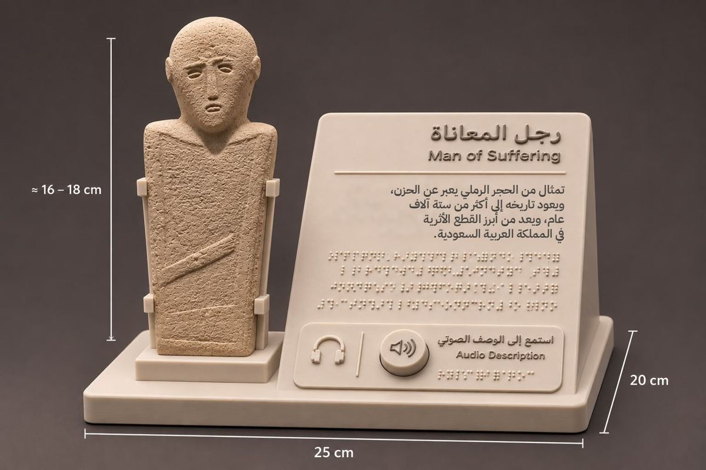
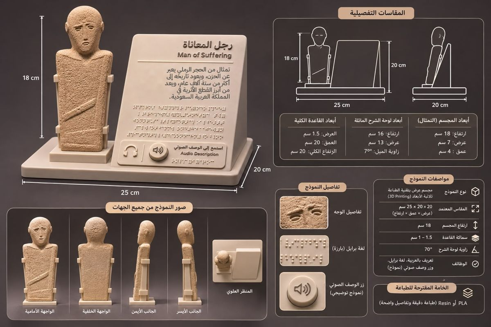
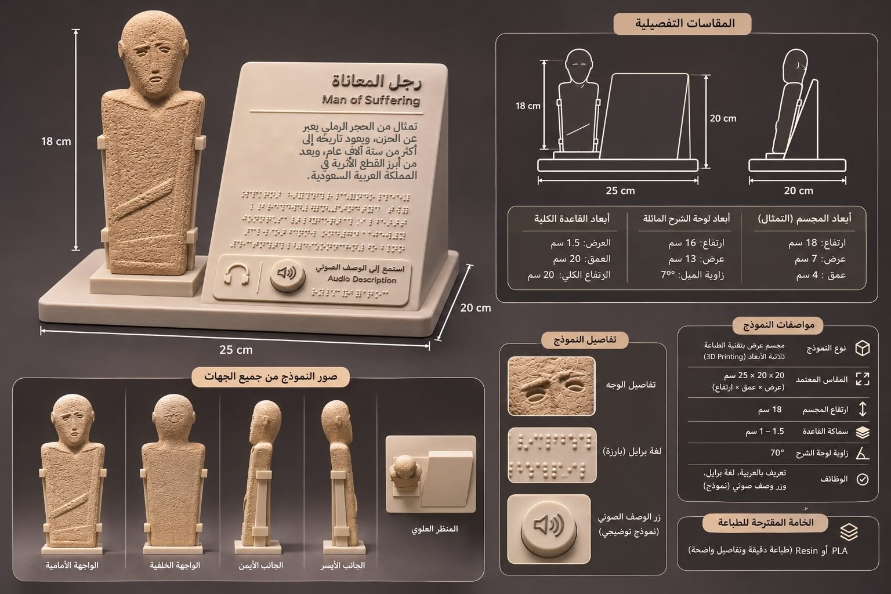

وصف يتبع يد الزائر
«بصيرة» محطة في المتحف يلمس فيها الزائر الكفيف مجسمًا مطبوعًا لتمثال «رجل المعاناة»، ويقرأ معلوماته بطريقة برايل، ويسمع وصفه بالعربية بحسب ما لمسته يده.
هذه الصفحة لتوضيح الفكرة فقط، ومخرج المشروع هو المجسم المطبوع.

جرّب الطريقة
اختر الطريقة واضغط «ابدأ»، ثم المس مناطق التمثال في الرسم أو من القائمة. كل لمسة جديدة على المنطقة نفسها تنقلك إلى المستوى التالي كما في المجسم، وكل ما يُقال يظهر مكتوبًا في المربع الداكن.
يقابل هذا الزر في المحطة الضغطة الطويلة على «تخطَّ»، ويُسجَّل كل استخدام له.
الانتقالات اليدوية: 0
مكونات المحطة
صمّم الفريق النموذج الحالي وطبعه بالطباعة ثلاثية الأبعاد: مجسم بارتفاع 18 سم على قاعدة 25 × 20 سم، ولوحة مائلة عليها نص عربي وسطور برايل، وزر واحد للوصف الصوتي.

جولة في لوحة المواصفات
اضغط «تشغيل» لتقترب الصورة من أجزاء النموذج واحدًا بعد آخر، مع جملة تشرح كل جزء. ويمكن التنقل بين الأجزاء بزري «السابق» و«التالي».

ما سنضيفه إلى النموذج
الرسم يوضح الإضافات التي يحتاجها الوصف المتدرج، والأرقام فيه تقابل الجدول.
| المكون | النموذج الحالي | الإضافة المقترحة |
|---|---|---|
| 1. نقاط اللمس | لا توجد | ست نقاط لمس على مناطق المجسم، وكل لمسة جديدة على النقطة نفسها تنقل إلى المستوى التالي |
| 2. أزرار التحكم | زر صوت واحد | أربعة أزرار بارزة بأشكال مختلفة في صف على الحافة الأمامية، حول علامة بارزة في المنتصف، وتحت كل زر كلمته بطريقة برايل: البدء، والتكرار، والتخطي، والإيقاف. والضغطة الطويلة على التخطي تنقل إلى المستوى التالي |
| 3. الصوت | زر توضيحي | مكبر صوت ومخرج سماعات، ووصف مسجل بصوت بشري |
| 4. لوحة الشرح | نص عربي وسطور برايل | نص يُراجَع مع المتحف، وبرايل يراجعه قارئ برايل |
| 5. المعالجة | غير موجودة | متحكم صغير داخل القاعدة يطبق القواعد |
وضع الإتاحة
لا يبدأ الصوت إلا بضغطة منك، وكل ما يُنطق مكتوب في الصفحة، ويمكن استخدام الصفحة كلها بلوحة المفاتيح.
عن المشروع
الفكرة
مشروع ابتكار اجتماعي في مسار السياحة والتراث. نقترح فيه دليلًا يجمع اللمس والوصف الصوتي، لا يسمع فيه الزائر تفاصيل منطقة قبل أن يلمسها، وتُفتح له الملامح المنحوتة بعد أربع مناطق وسؤال قصير، ويستطيع أن يغيّر الترتيب متى شاء.
القطعة
تمثال من الحجر الرملي عُثر عليه قرب بلدة الكهفة جنوب حائل، ويُقدَّر عمره بأكثر من ستة آلاف عام (وكالة الأنباء السعودية، 2020). ولم نجد مصدرًا متحفيًا رسميًا يحدد تأريخه الدقيق أو مكان عرضه الحالي.
حدود هذه الصفحة
هذه الصفحة لتوضيح الفكرة، ومخرج المشروع هو المجسم المطبوع. والرسم تقريبي من واجهة التمثال، والنطق هنا آلي من المتصفح، أما في المحطة فسيُسجَّل الوصف بصوت بشري بعد مراجعة المتحف.
المصدر
وكالة الأنباء السعودية. (2020). تقرير / قطع أثرية سعودية اشتهرت عالميًا بقيمتها الفنية والتاريخية. spa.gov.sa/2092275